This set explores bathroom wall photo ideas through minimal aesthetics and cool tone under backlight. Compositions use leading lines with minimal set, keeping focus clear and tidy. Details like office styling and balanced colors make browsing easy.
Browse shower images. Page 6 of curated shower-style portrait collection.
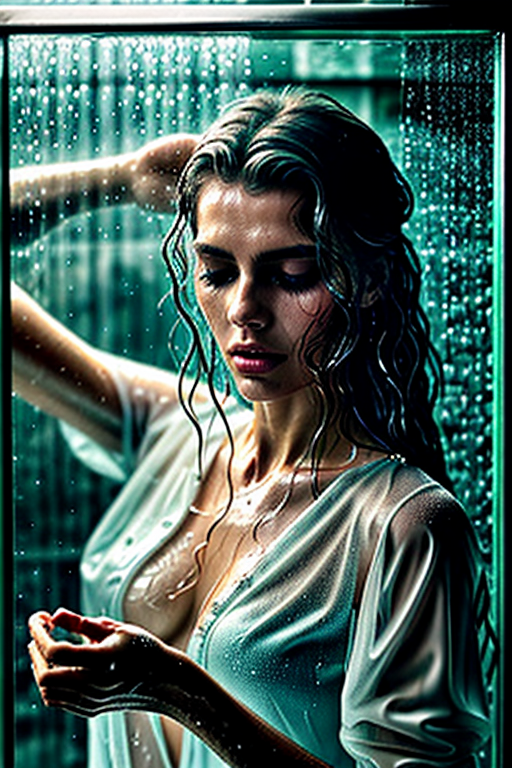
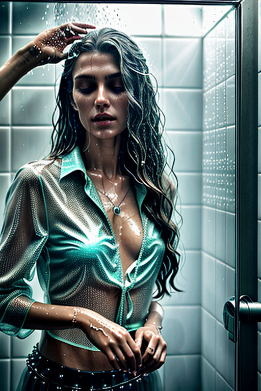
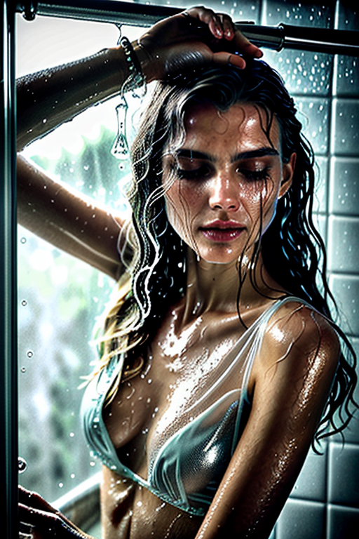
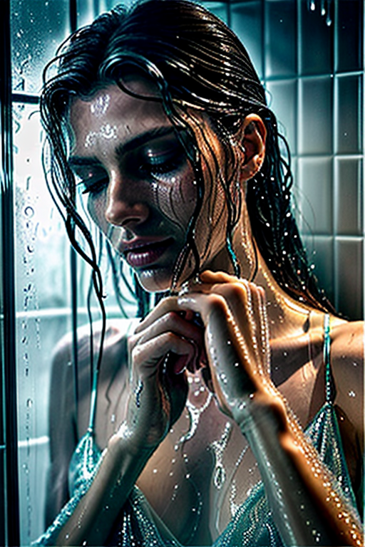


 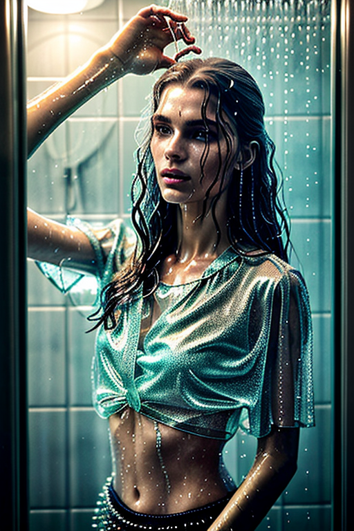
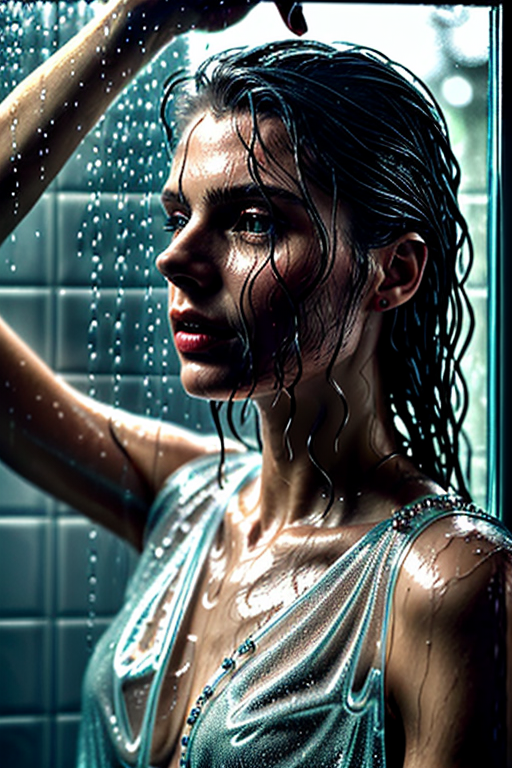
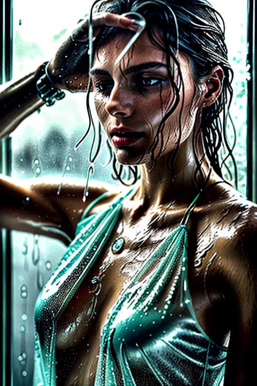
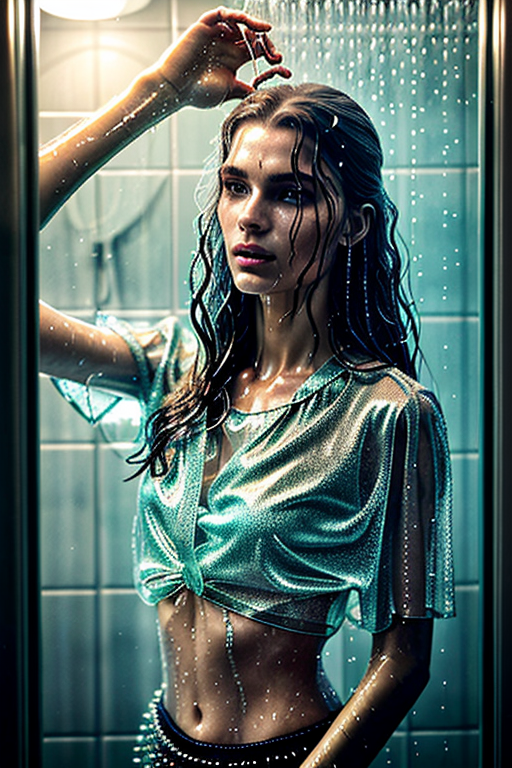
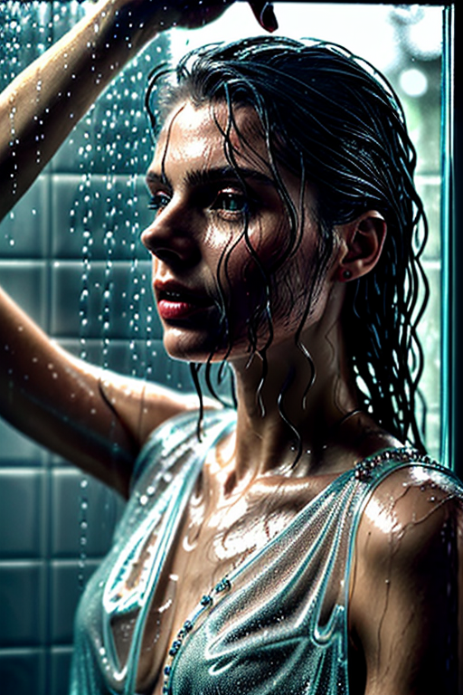
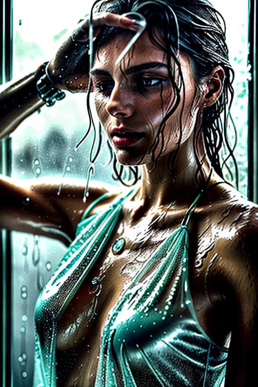

 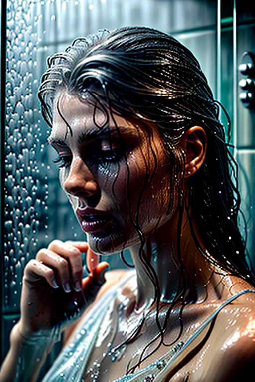
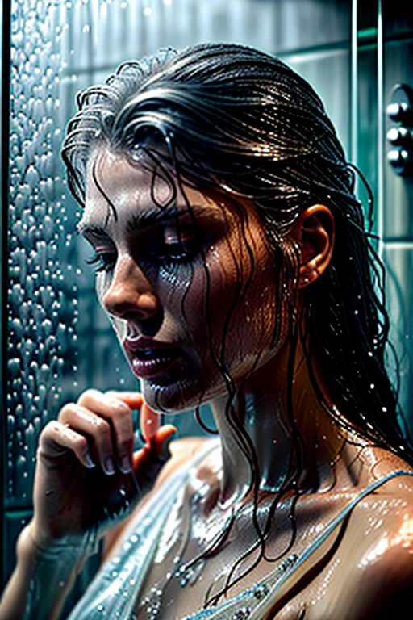
 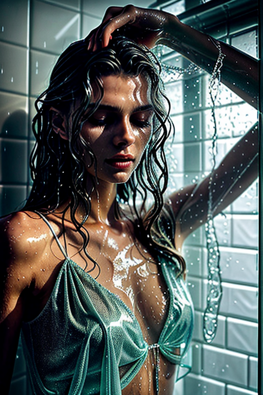
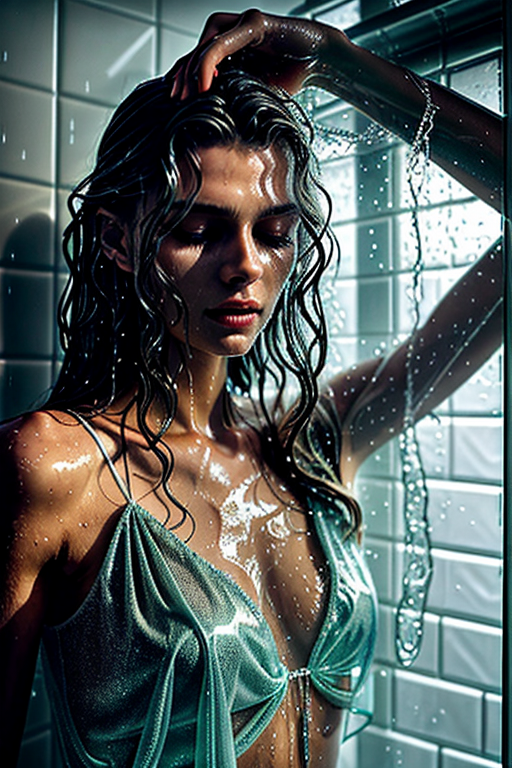
 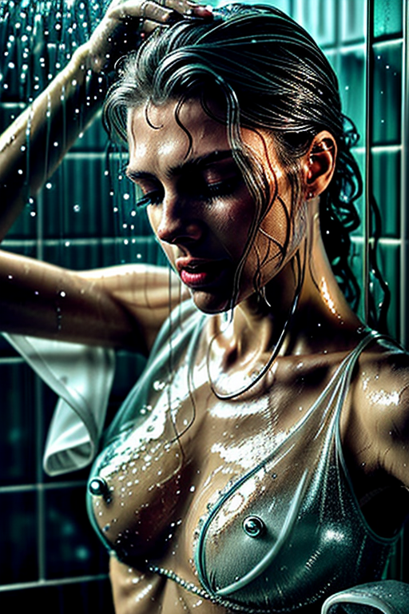
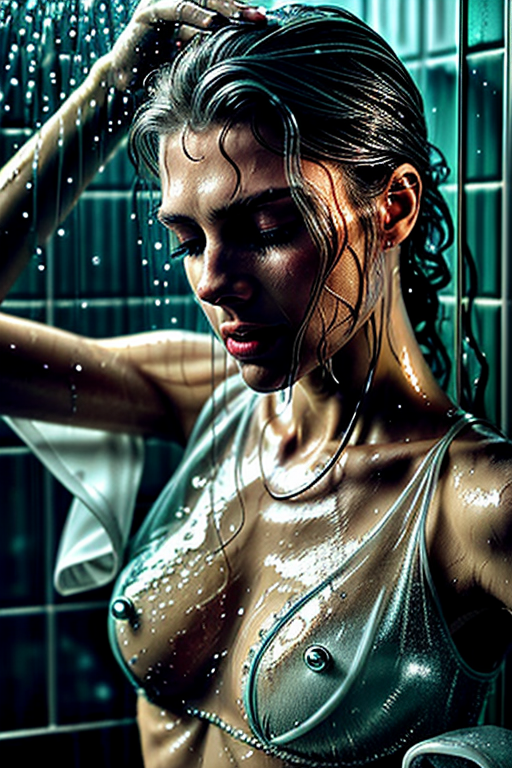
Here we highlight page6, aiming for clean structure, quick scanning, and useful context. Alt text and headings are optimized to make the content accessible and to provide consistent cues across the site. Subtle differences in wording help avoid duplication across similar pages. Internal navigation leads to related items with comparable tone or composition. This reduces bounce and supports exploration within the same theme. The image aims to deliver a straightforward visual impression while keeping the file lightweight. A brief explanation clarifies the subject and lighting so visitors can quickly decide where to go next. If you are comparing alternatives, keep an eye on subtle differences in framing, contrast, and color balance. Internal navigation leads to related items with comparable tone or composition. This reduces bounce and supports exploration within the same theme. For more context, browse related entries linked nearby; each page offers a slightly different angle to limit overlap.